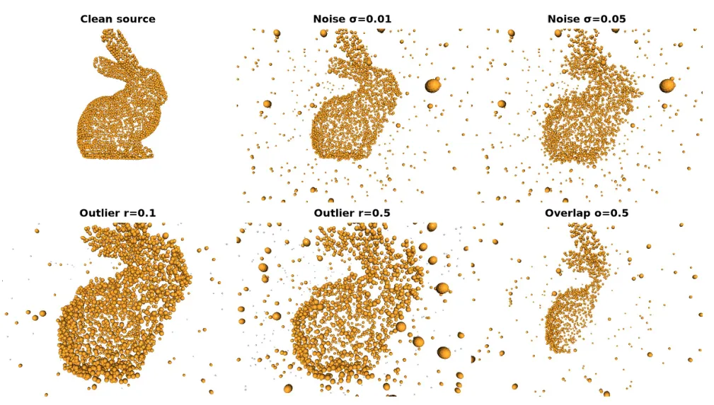
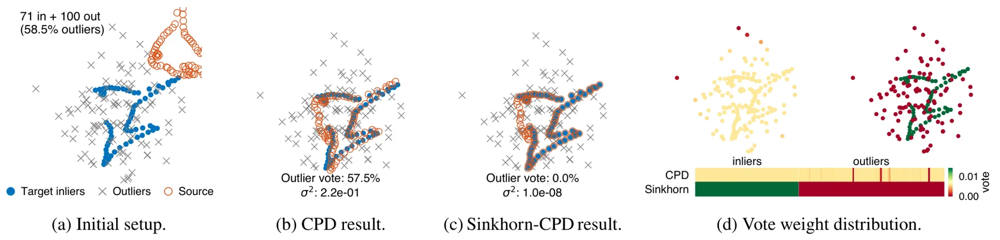
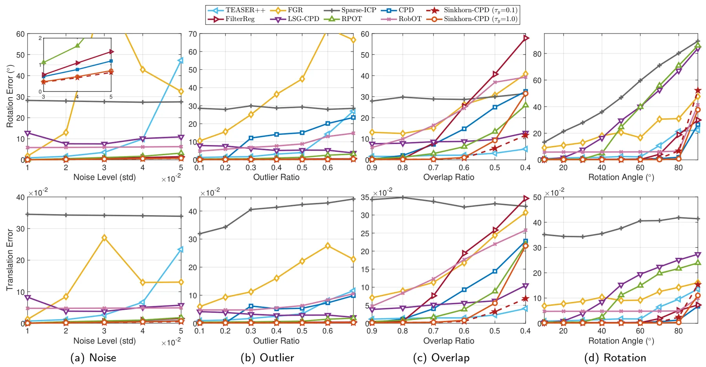
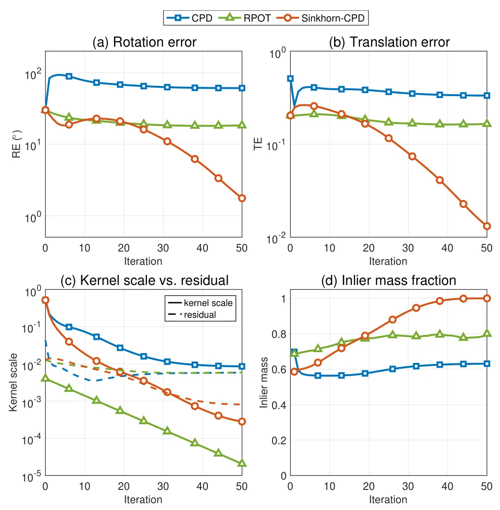
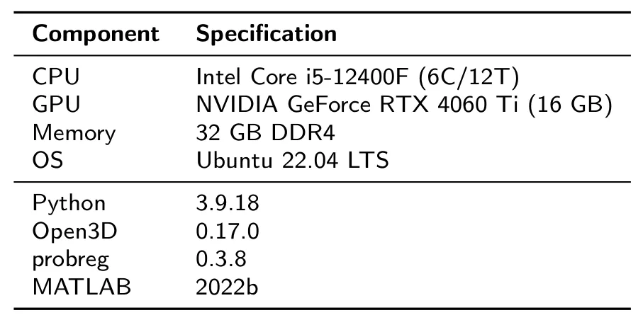
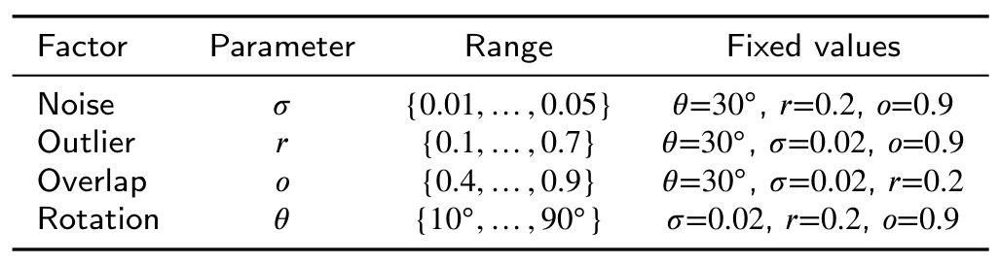
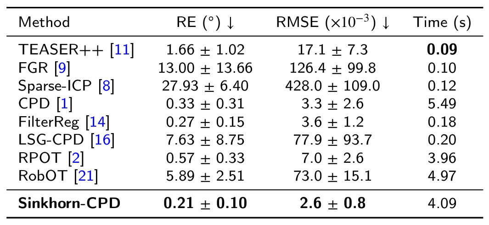

Sinkhorn-CPD：通过非平衡熵正则最优传输实现鲁棒点云配准Sinkhorn-CPD: Robust point cloud registration via unbalanced entropic optimal transport
点云配准是 LiDAR SLAM、回环验证和地图对齐的关键模块，非平衡 OT 对离群点处理很有吸引力；需进一步关注大规模点云复杂度和与 GICP/TEASER 等方法的工程对比。
一句话工作总结
Sinkhorn-CPD 用非平衡 OT 允许点云两侧丢弃离群质量，同时保留 CPD 闭式更新，提高低重叠和重离群配准鲁棒性。
摘要
Coherent Point Drift 因软对应和闭式参数更新被广泛用于刚性点云配准，但其目标侧边缘约束会强迫每个观测点，包括离群点，接收单位概率质量，在重离群和部分重叠场景下会降低精度。Sinkhorn-CPD 用双 Kullback-Leibler penalty 替换 CPD 的目标侧边缘约束，允许算法在源和目标两侧丢弃离群质量，形成完全非平衡的熵正则最优传输问题，并可用 generalized Sinkhorn iterations 高效求解。同时，方法保留 CPD 的闭式 Procrustes 和方差更新；其中方差 sigma^2 充当熵正则参数，使对应关系自动从弥散到尖锐退火，无需手动温度调度。合成、跨类别和 scan-to-CAD 实验显示其在离群和部分重叠下有较强鲁棒性。
Coherent Point Drift (CPD) is widely used for rigid point cloud registration because of its soft correspondences and closed-form parameter updates. However, CPD's target-side marginal constraint forces every observation, including outliers, to receive exactly unit probability mass. This assumption degrades registration accuracy under heavy outliers and partial overlap. Optimal transport (OT) methods can handle missing mass through unbalanced formulations, but require hand-tuned annealing schedules. In this paper, we propose Sinkhorn-CPD, which replaces CPD's target-side marginal constraint with dual Kullback-Leibler penalties, allowing the algorithm to discard outliers on both sides. The resulting formulation is a fully unbalanced entropic optimal transport problem, which can be efficiently solved by generalized Sinkhorn iterations. Moreover, Sinkhorn-CPD preserves the closed-form Procrustes and variance updates of CPD. In our method, the variance sigma^2 plays the role of the entropic regularization parameter, which induces an automatic annealing schedule from diffuse to sharp correspondences without manual temperature tuning. Experiments on synthetic, cross-category, and scan-to-CAD benchmarks show that Sinkhorn-CPD achieves state-of-the-art accuracy, with strong robustness to outliers and partial overlap.
中文解读摘录
- 链接：abs / PDF；作者：Jin Zhang, Mingyang Zhao, Bing Liu, Xin Jiang；类别：cs.CV；采集 score=9；Computer-Aided Design 期刊版本。
- 核心思路：CPD 的 target-side marginal constraint 会强迫离群点也分配单位概率质量，导致重离群和部分重叠场景配准退化；本文用非平衡熵正则 OT 替换该约束。
- 方法要点：通过双 KL penalty 允许源/目标两侧丢弃缺失质量；用 generalized Sinkhorn iterations 求解，同时保留 CPD 的闭式 Procrustes 和方差更新；sigma^2 同时充当熵正则参数，实现自动退火。
- 关注点：对点云 loop closure、scan-to-CAD、地图对齐和低重叠配准有直接参考价值；建议关注运行复杂度、与 TEASER/GICP/学习式配准的对比，以及大规模 LiDAR 子图场景可扩展性。
图表/页面预览

{kind=link}

{kind=link}

{kind=link}

{kind=link}

{kind=link}

{kind=link}

{kind=link}
